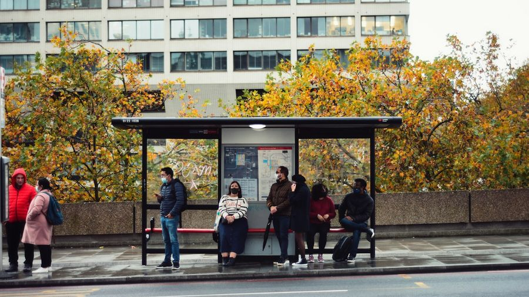
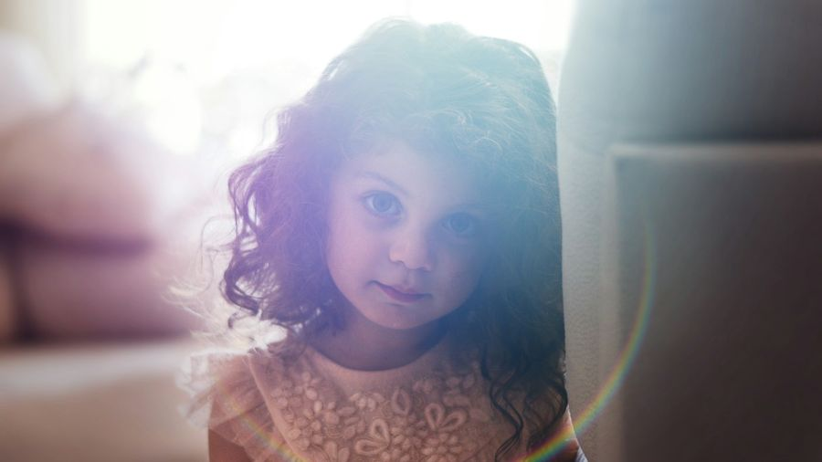
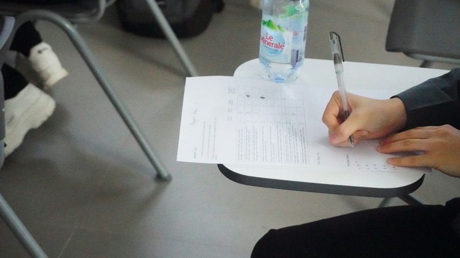
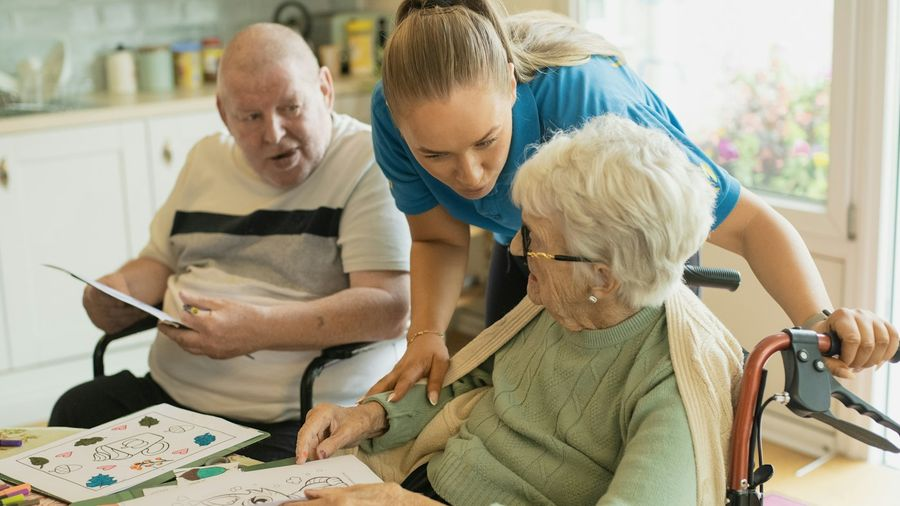
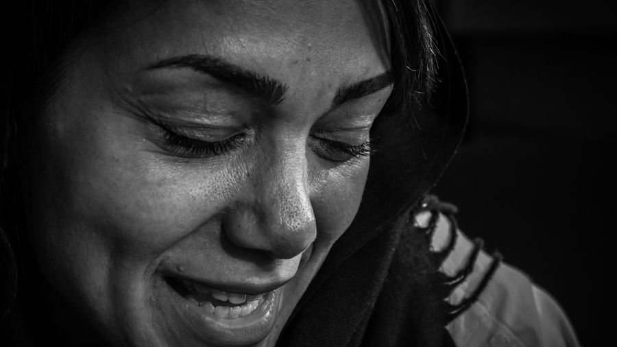
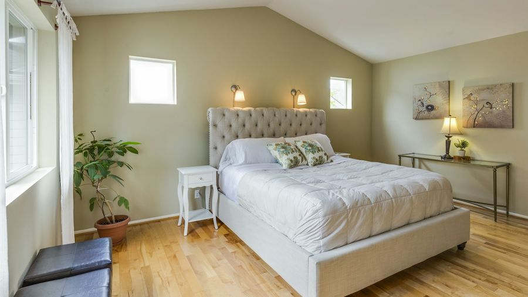
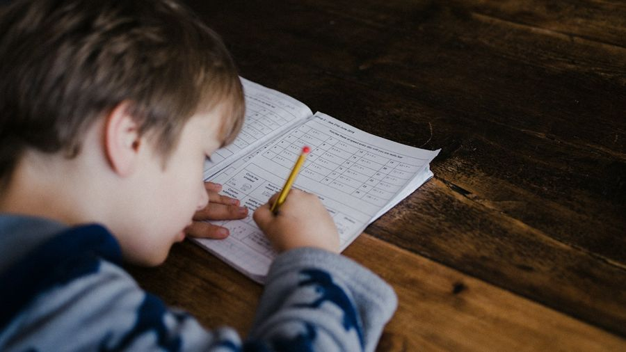
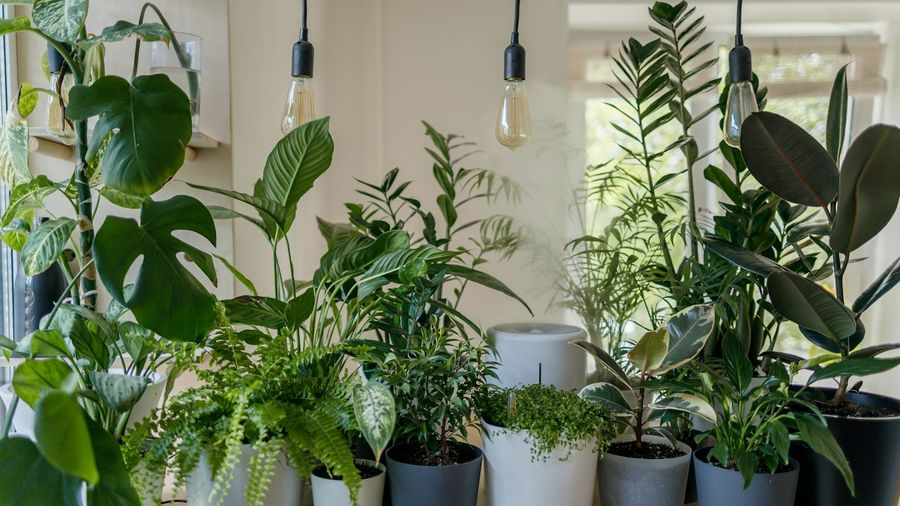
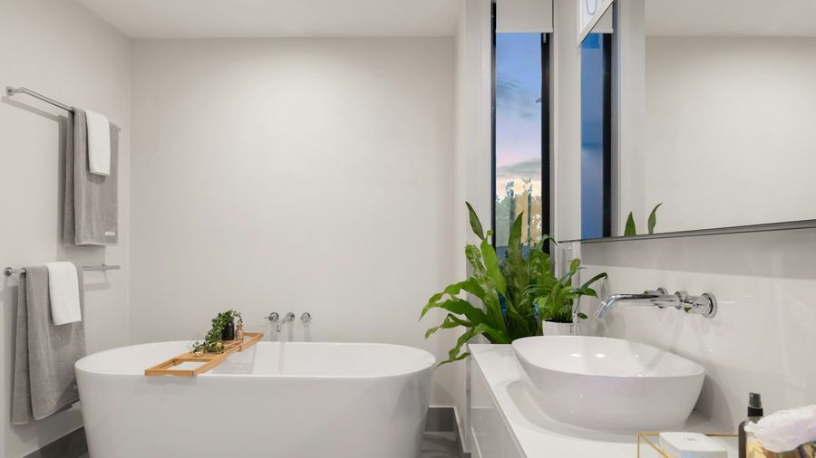

Grammatikfokus
Verben wie warten auf, denken an, sich freuen über – das Verb und seine Präposition gehören fest zusammen. Die Präposition bestimmt den Kasus. 🎯
Die Regel in 3 Schritten
Verb + Präposition gehören fest zusammen – und die Präposition bestimmt den Kasus.


1️⃣ Feste Paare: Verb + Präposition
„Ich warte auf den Bus.“ · „Ich denke an dich.“
Viele Verben haben eine feste Präposition. Dieses Paar lernt man zusammen auswendig: warten auf, denken an, sich freuen auf, sich interessieren für.
2️⃣ Die Präposition bestimmt den Kasus
„Ich ärgere mich über den Lärm.“ (Akk.) · „Ich nehme an dem Kurs teil.“ (Dativ)
Akkusativ: auf, über, für, um, an (Richtung). Dativ: von, zu, vor, mit, an (teilnehmen). Nicht das Verb allein, sondern die Präposition entscheidet.
3️⃣ Fragewörter: wo(r)+Präp / Präp+wen/wem
Sache → wo(r)-: „Worauf wartest du?“ · „Woran denkst du?“ · „Worüber ärgerst du dich?“
Person → Präposition + wen/wem: „Auf wen wartest du?“ · „An wen denkst du?“
| Verb + Präposition | Kasus | Frage (Sache) |
|---|---|---|
| warten auf | Akk. | worauf? |
| sich freuen auf (Zukunft) | Akk. | worauf? |
| sich freuen über (jetzt/vorbei) | Akk. | worüber? |
| denken an | Akk. | woran? |
| sich interessieren für | Akk. | wofür? |
| Angst haben vor | Dativ | wovor? |
| Verb + Präposition | Kasus | Frage (Sache) |
|---|---|---|
| sich ärgern über | Akk. | worüber? |
| teilnehmen an | Dativ | woran? |
| sich kümmern um | Akk. | worum? |
| bitten um | Akk. | worum? |
| sich erinnern an | Akk. | woran? |
| träumen von | Dativ | wovon? |
| Verb + Präposition | Kasus | Frage (Sache) |
|---|---|---|
| gehören zu | Dativ | wozu? |
| sich gewöhnen an | Akk. | woran? |
| sich beschweren über | Akk. | worüber? |
| sich verlassen auf | Akk. | worauf? |
| sich beschäftigen mit | Dativ | womit? |
| hoffen auf | Akk. | worauf? |
🎡 Drehrad
Beispiele im Kontext
Mehrere Sätze pro Verb aus dem echten Alltag + ein Mini-Dialog zum Aufklappen. Genau diese Paare kommen im Sprechteil wieder! (Niveau oben umschalten.)
🎭 Mini-Dialog
A: Worauf wartest du?
B: Ich warte auf meinen Freund.
🎭 Mini-Dialog
A: Freust du dich auf das Wochenende?
B: Klar, ich freue mich total darauf!
🎭 Mini-Dialog
A: Gefällt dir die Karte?
B: Ja, ich freue mich sehr über die Worte!
🎭 Mini-Dialog
A: Woran denkst du?
B: Ich denke an meinen Urlaub.
🎭 Mini-Dialog
A: Kommst du zur Ausstellung?
B: Gern, ich interessiere mich für Kunst.
🎭 Mini-Dialog
A: Was magst du nicht?
B: Ich habe Angst vor Höhe.
🎭 Mini-Dialog
A: Alles ok?
B: Ich ärgere mich nur über den Stau.

🎭 Mini-Dialog
A: Machst du beim Projekt mit?
B: Ja, ich nehme an dem Treffen teil.

🎭 Mini-Dialog
A: Wer macht den Garten?
B: Ich kümmere mich um die Pflanzen.
🎭 Mini-Dialog
A: Brauchst du Hilfe?
B: Ja, ich bitte dich um einen Gefallen.

🎭 Mini-Dialog
A: Weißt du noch, das Konzert?
B: Klar, daran erinnere ich mich gern!

🎭 Mini-Dialog
A: Was ist dein großer Wunsch?
B: Ich träume von einem Haus am Meer.
🎭 Mini-Dialog
A: Machst du das auch?
B: Ja, das gehört zu meinem Job.
🎭 Mini-Dialog
A: Wird es klappen?
B: Ich hoffe auf eine gute Nachricht.
🎭 Mini-Dialog
A: Bist du im Orga-Kreis?
B: Ja, ich gehöre zum festen Team.
🎭 Mini-Dialog
A: Wie ist das neue Büro?
B: Gut, ich gewöhne mich langsam daran.
🎭 Mini-Dialog
A: Das Essen ist kalt!
B: Dann beschwer dich über den Service.
🎭 Mini-Dialog
A: Schaffst du das?
B: Ja, verlass dich auf mich!
🎭 Mini-Dialog
A: Was ist dein Hobby?
B: Ich beschäftige mich viel mit Sprachen.
🎭 Mini-Dialog
A: Was wünschst du dir?
B: Ich träume von mehr freier Zeit.
🎭 Mini-Dialog
A: Du siehst müde aus.
B: Ja, ich sehne mich nach Urlaub.
🎭 Mini-Dialog
A: Heißt es „an dich“ oder „an dir“?
B: Bei „denken an“ → Akkusativ: an dich. Bei „teilnehmen an“ → Dativ.
Üben
Gemischte, interaktive Übungen — die Antworten sind quer gemischt (nicht der Reihe nach). Niveau oben umschalten.

✍️ Welche Präposition passt?
🖼️ Welche Präposition?

„Ich kümmere mich ___ den Garten.“
✅ Akkusativ oder Dativ?
🔀 Verb ↔ Präposition
Verb
Präposition
Verb
Präposition
Verb
Präposition
🧩 Verb ↔ Fragewort
Verb
Fragewort
🏆 Das große Präpositionen-Quiz
🗣️ Sprechen & wiederholen
Die 90-Sekunden-Challenge: Thema ziehen, Stichpunkte lesen und 90 Sekunden am Stück frei sprechen. Passt sich dem Niveau an (oben umschalten).
⏱️ 90-Sekunden-Challenge
💬 Dialoge zum Mitlesen
Lest die kurzen Alltagsszenen zu zweit laut vor – Rolle A und Rolle B. Die markierten Teile zeigen das Verb + die feste Präposition. Tauscht danach die Rollen. Zum freien Üben: unten eine Seite verdecken – die andere spricht frei, zum Prüfen auf die verdeckte Blase tippen. (Niveau oben umschalten.)